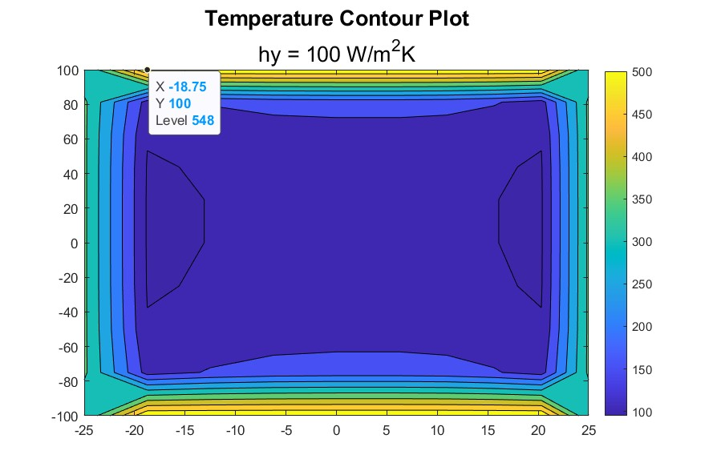
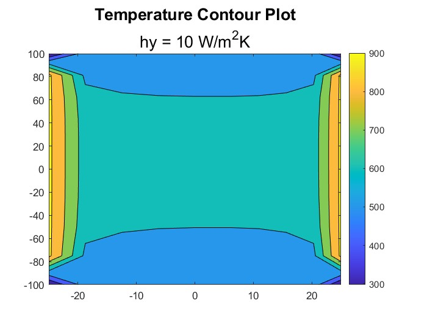

Programs · Project 01
Thermodynamic Simulation
This project uses Fourier’s law and heat boundary equations to model the heat transfer through a solid object over time. The contour plots compare the resulting temperature distribution across the part for two convection coefficients on its boundaries, hy = 100 and 10 W/m²K.

